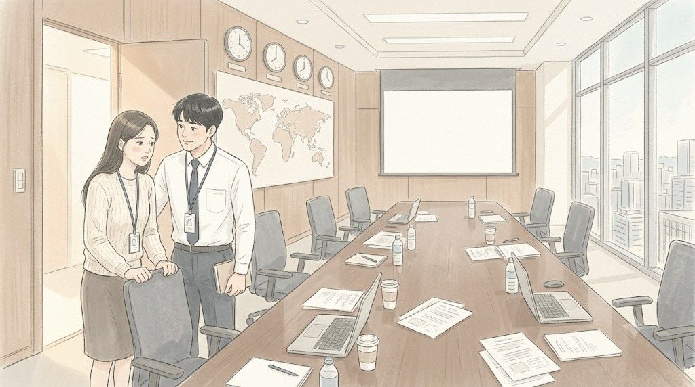
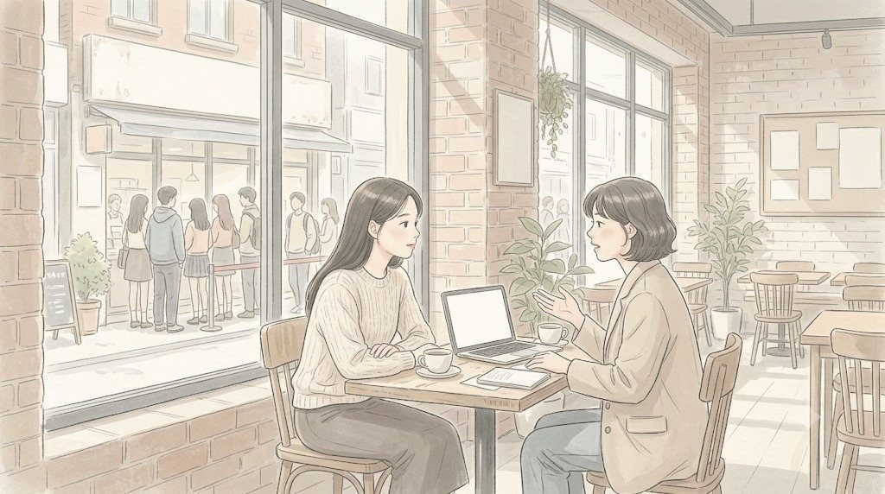
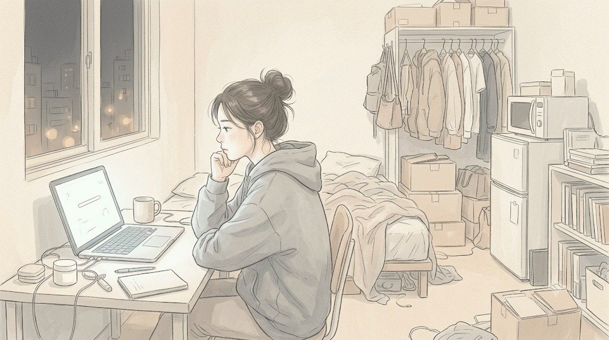

토요일 오전 7시 40분. 29층 대회의실.
화면에 마지막 장이 떴다.
'데일리뷰티사업부 · 온라인전략사업팀 공동 기획 - 슬로워시 대용량 바디워시 정기 배송.'
그 아래 작은 글씨로 두 줄이 더 있었다.
'실무: 온라인기획파트 이우진 과장, 나서현 사원.'
조영석 부장은 발표를 마치고 그 장에서 잠깐 말을 멈췄다. 그리고 문 옆 보조석을 향해 손을 들었다.
"이 기획은 사실 저 두 사람이 밤을 새워 만든 겁니다. 저희 사업부는 상품을 댔고요."
회의실의 몇 사람이 고개를 돌렸다. 이우진은 등을 곧게 폈다. 그 옆에서 나서현은 무릎 위에 올린 수첩을 두 손으로 꽉 쥐었다. 그녀가 토요일 회의에 들어온 건 처음이었다. 출력본을 나르고, 생수병 라벨 방향을 맞추는 일로 들어온 자리였다.
문혜경 사장은 마지막 장을 오래 봤다.
"좋네요. 공동 기획."
빨간 볼펜은 움직이지 않았다. 대신 그녀는 출력본을 앞으로 넘겨 상세페이지 시안을 펼쳤다.
"근데 이 페이지. 고객이 이걸 다 읽어요?"
시안에는 글자가 빽빽했다. 성분 이름 열두 개, 인증 마크 다섯 개, '피부 장벽', '고보습', '저자극'이 세 번씩 반복되었다. 데일리뷰티사업부가 매장 진열용 설명서에서 그대로 옮겨 온 문장들이었다.
조영석이 머뭇거렸다. 한지석이 대신 입을 열었다.
"상세페이지는 다음 주까지 다시 만들겠습니다. 2주 정도..."
"2주요?"
그때였다. 아주 작은 목소리가 문 옆에서 새어 나왔다.
"소다랩은 이걸 하룻밤에 해요."
회의실이 조용해졌다.
나서현은 자기 입을 막고 싶은 얼굴이었다. 혼잣말이었다. 정말로, 혼잣말이었다. 다만 그 회의실은 혼잣말이 혼잣말로 남지 않는 방이었다.
문혜경이 고개를 돌렸다.
"방금 누구예요?"
이우진은 숨을 멈췄다. 나서현이 천천히 일어났다.
"온라인기획파트 나서현 사원입니다. 죄송합니다."
"뭐가 죄송해요. 다시 말해 봐요. 소다랩은 이걸 하룻밤에 한다고요?"
나서현은 한지석을 봤다. 한지석이 아주 작게 고개를 끄덕였다. 말해도 된다는 뜻이었다. 아니, 이미 말해 버렸으니 끝까지 하라는 뜻이었다.
"네. 소다랩은 신제품이 나오면 전날 밤에 마케터가 직접 써서 다음 날 아침에 올려요. 틀리면 그날 고치고요. 고객 반응 보고 오후에 문장을 또 바꿔요. 저희는... 법무, 브랜드, 사업부, 디자인 검토를 다 받아야 해서요."
"그래서 2주."
"네."
"하룻밤에 쓴 페이지가 더 잘 팔려요?"
나서현이 잠깐 망설였다. 그리고 휴대폰을 꺼냈다.
"제 대학 동기가 소다랩 마케터예요. 정다은이라고. 지난달에 수분 크림 페이지를 하룻밤에 썼는데, 첫 문장이 이거였어요."
그녀가 화면을 읽었다.
"'세안하고 3분 안에 바르세요. 그게 전부예요.'"
회의실의 누군가가 작게 웃었다. 재무팀장 오정택 상무였다.
"그 페이지 전환율이 저희 수결 크림 페이지의 두 배예요. 동기가 자랑하려고 보낸 거라 정확한지는... 확실하지 않습니다."
마지막 말에서 목소리가 작아졌다. 문혜경은 그 말을 놓치지 않았다.
"확실하지 않은 건 확실하지 않다고 말하네요. 좋아요."
그녀는 빨간 볼펜을 들어 출력본 여백에 무언가를 적었다.
"한 차장. 2주 말고 일주일. 다음 주 토요일에 우리 수결 크림 페이지랑 저 바디워시 페이지, 두 개 다시 만들어 와요. 검토 절차는 권 상무가 대표님이랑 정리하시고."
황인석 대표가 고개를 끄덕였다. 권재혁은 짧게 "네"라고만 했다.
8시 12분. 회의가 끝났다.
사람들이 빠져나간 회의실에서 나서현은 의자 등받이를 붙잡고 서 있었다. 무릎이 떨렸다.
"과장님. 저 이제 잘리는 거죠?"

이우진은 웃음을 참았다.
"사장님이 '좋아요'라고 했잖아."
"그게 좋은 거예요?"
"3주 동안 사장님이 '좋아요'라고 한 건 오늘이 처음이야."
나서현은 그제야 의자에 주저앉았다. 그리고 고개를 들었다.
"근데 과장님. 일주일이면 검토는 어떡해요?"
이우진도 그건 몰랐다.
오전 9시. 상무실.
권재혁은 창가에 서서 광화문 쪽을 내려다보고 있었다. 한지석과 백승원, 이우진이 들어서자 그가 돌아섰다.
"검토 단계, 지금 몇 개예요?"
"다섯입니다. 사업부, 브랜드, 법무, 디자인, 그리고 대표실 보고."
한지석이 답했다.
"그중에 고객을 위한 단계는?"
아무도 대답하지 않았다. 권재혁이 화이트보드에 다섯 개를 적고, 그중 세 개에 줄을 그었다.
"법무는 남겨요. 광고 문구는 진짜 위험하니까. 사업부는 사실 확인만. 나머지는 사후 보고로 돌립니다. 대표님한테는 내가 말해요."
"브랜드팀이 반발할 겁니다."
백승원이 말했다.
"반발하라고 해요. 그 대신 틀리면 우리가 책임진다고 문서로 남겨요. 승원아, 브랜드팀은 네가 좀 다독여 줘."
"네, 상무님."
백승원이 웃었다. 상무실에서 '승원아'가 나온 건 처음이었다. 이우진은 못 들은 척 수첩만 내려다봤다. 권재혁도 자기가 뭐라고 했는지 깨달았는지, 헛기침을 한 번 했다.
"그리고 한 차장."
"네."
"오늘 그 신입. 나서현 씨."
한지석이 긴장했다. 권재혁이 덧붙였다.
"페이지 첫 문장은 그 친구한테 쓰게 해요. 한 차장이 고치지 말고."
토요일 오후 2시. 성수동 카페 「한낮의 서재」.
나서현은 창가 자리에서 정다은을 기다렸다. 대학 시절 같은 뷰티 동아리였던 동기. 졸업 뒤 정다은은 직원 열두 명의 소다랩에 들어갔고, 나서현은 직원 수천 명의 청연에 들어갔다. 3년이 지난 지금 소다랩은 직원이 이백 명이 넘었다.
정다은은 노트북을 끼고 들어왔다. 토요일인데도 일하는 얼굴이었다.
"너 오늘 너네 사장님 앞에서 내 얘기 했다며? 내 동기가 청연 다니는 거 아는 사람이 우리 회사에도 있거든. 소문 빨라."
"미안. 진짜 혼잣말이었어."
"혼잣말을 사장님 앞에서 하는 애가 어딨어."
정다은은 웃으며 커피를 시켰다. 그리고 진지한 얼굴로 돌아왔다.
"근데 서현아. 하룻밤에 쓰는 거, 그거 자랑 아니야."

"응?"
"우리는 검토할 사람이 없어서 하룻밤에 쓰는 거야. 틀리면 내가 책임져. 지난달에 성분 이름 하나 잘못 써서 사흘 동안 고객 문의 삼백 개 받았어. 혼자서."
나서현은 커피잔을 내려놓았다.
"너네 회사는 다섯 군데서 검토하잖아. 그거 느린 거 맞아. 근데 그 다섯 군데가 너를 지켜 주기도 해. 우리는 아무도 안 지켜 줘."
정다은은 창밖을 봤다. 성수동 골목에는 소다랩의 팝업 매장 앞에 줄이 서 있었다.
"그래도 나는 우리 회사가 좋아. 내가 쓴 문장이 다음 날 팔리는 게 보이니까. 너는 네가 쓴 문장이 팔리는 거, 본 적 있어?"
나서현은 대답하지 못했다. 반년 동안 그녀가 쓴 문장은 모두 누군가의 이름으로 나갔다.
그날 밤 11시. 나서현은 원룸 책상에 앉아 빈 문서를 열었다.
수결 수분 크림. 연구소 출신 파트장이 처방을 안다고 했다. 데이터 담당 선배가 고객 리뷰를 뽑아 줬다. 과장은 경쟁 브랜드 페이지를 스무 개 캡처해 보냈다.
그녀는 첫 문장을 썼다. 지웠다. 다시 썼다.
새벽 2시. 문서 맨 위에 한 줄이 남았다.

'아침에 바르고, 저녁까지 잊으세요.'
나서현은 그 문장을 오래 들여다봤다. 그리고 처음으로, 이 문장이 누구의 이름으로 나갈지 궁금하지 않았다.
(EP13 끝)